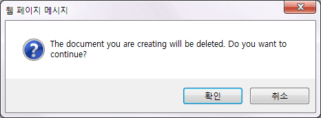
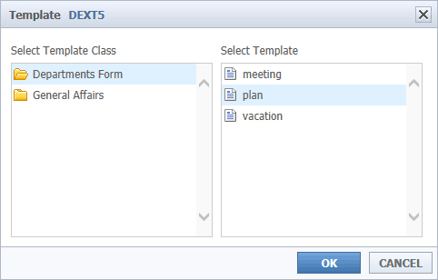
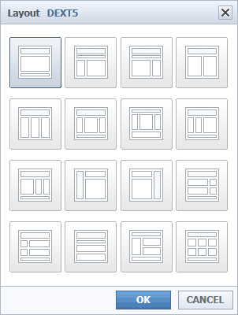
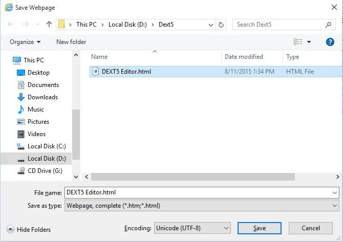
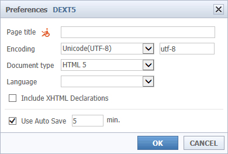
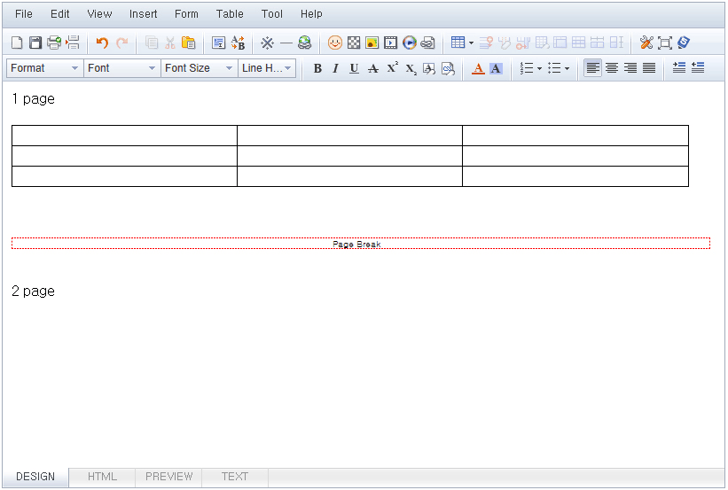

Files
New document
It replaces the current working document in the new document.

01If you edit while you will have the opportunity to delete content.
02If you are not editing the contents, the new document opens immediately.
File Open
You can import the contents of the selected file (* Support for extensions: html, htm, txt)

01If you edit while you will have the opportunity to delete content.
02If no content appears just being edited contents of the selected file.
Template
The template is stored in the current available to help users.

01It displays a list of templates you saved earlier.
02the user indicates the selected file in the editor.
Layout
It can help you to using the document layout to easily document writing.

Save
The contents that you are working on can be saved as specific file.

Load auto-save content
Html content that has been saved from the Editor automatically brings up the editor.
(If the content is automatically saved this icon is activated.)
Auto-save settings can be set in the environment.

Print the contents of the editor to the printer that is installed on your computer.
Page Break
Print Split pages when printing.
